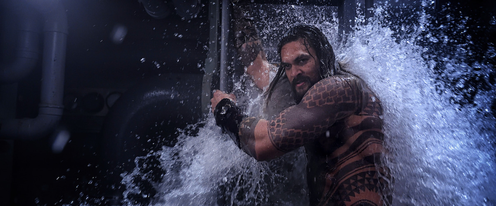

AQUAMAN
Release date: 17 Jan 2020 (United States)
Directors: Adil El Arbi · Bilall Fallah
DVD release date: 31 Mar 2020
Summary: 2hr 4min ·Crime/Thriller
Languages: English - Spanish
Costume designer: Dayna Pink
SUMMARY
Whenever anybody asks me what “Aquaman” is like, I mention an early scene where opposing Atlantean forces square off and debate the kingdom’s future. One side rides armored seahorses that whinny. The other rides armored sharks that roar. "Aquaman" is as concerned with scientific accuracy as “SpongeBob Squarepants.” And that’s one of many reasons why I like it. It takes skill to be as ridiculous as this movie about a half-human, half-Atlantean prince who’s known on land as Arthur Curry (Jason Momoa) without seeming to condescend to the material. Directed by James Wan (“Saw,” “The Conjuring”), it’s part of a thriving subcategory of superhero movies, also represented by “Spider-Man: Homecoming,” “Thor: Ragnarok,” “Venom” and both “Ant-Man” pictures—sweet, goofy, at times psychedelically weird films that mostly reject the sour gloom that gets mistaken for maturity. But that’s not to say that these movies aren’t serious in their own way. “Aquaman,” in particular, feels simultaneously like a spoof and an operatic melodrama. Any film that can combine those modes is a force to be reckoned with.Aquaman made his DC Expanded Universe debut in “Batman vs. Superman” and was part of the ensemble in “Justice League,” but this is the first movie that’s put him front-and-center. The results are enjoyable enough that you may wish Warner Bros. had done it sooner. While it’s not billed as such, this is an origin story, positioning Arthur as a reluctant hero. As conceived by screenwriters David Leslie Johnson-McGoldrick and Will Beall, adapting Mort Weisinger and Paul Norris’ source, Arthur is a mixed-species character who feels alienated from both of the civilizations he embodies. He's the offspring of union between a lighthouse keeper named Tom Curry (Temuera Morrison) and a stranded Atlantean named Atlanna (Nicole Kidman) whom Tom nursed back to health. Atlanna then returned to the sea and was put to death for the sin of birthing a half-human child.Arthur has long hair and tattoos, a knack for wisecracks, and a fondness for beer. He rejects allegiance to land or sea. He just wants to be left alone. But he still succumbs to prodding by the idealistic Atlantean Mera (Amber Heard), and becomes a uniter at a time when radical forces, led by Arthur’s treacherous half-brother Orm (Patrick Wilson), want to destroy the land-dwellers as revenge for polluting and militarizing the ocean. Arthur is one of those Joseph Campbell-certified, Fated-for-Great-Things heroes, thus the mythically resonant first name. He even has the equivalent of the moment when the future King Arthur pulls Excalibur from the stone. The movie is overlong and a bit repetitious (as big-budget superhero films tend to be), and its second half is more distinctive than its first because it lets its freak flag fly. But Wan and company mostly do a brilliant job of shaking the algae from cliches. Rather than get bogged down in plot particulars, they concentrate on characterization and performances, production design, costumes—the look, the feel, the vibe of it all. Every frame has marvelous details that you might not catch on first viewing. The Atlanteans use their mouths to speak, but there are no visible bubbles, only vocal distortion that suggests "bubbly-ness." When the characters aren’t swimming at dolphin speeds, they square off as if they’re standing on a sidewalk, bobbing ever-so-slightly. The water dwellers have lighting supplied by luminous deep-sea creatures and high technology inspired by aquatic animals and plants. Some of the battle armor features oversized crab and lobster claws. In one scene, Mera wears a dress with a collar made of glowing jellyfish and a multicolored seagrass skirt. In an arena sequence, we hear taiko drumming on the soundtrack, and the camera moves to reveal a lone percussionist: a giant octopus.